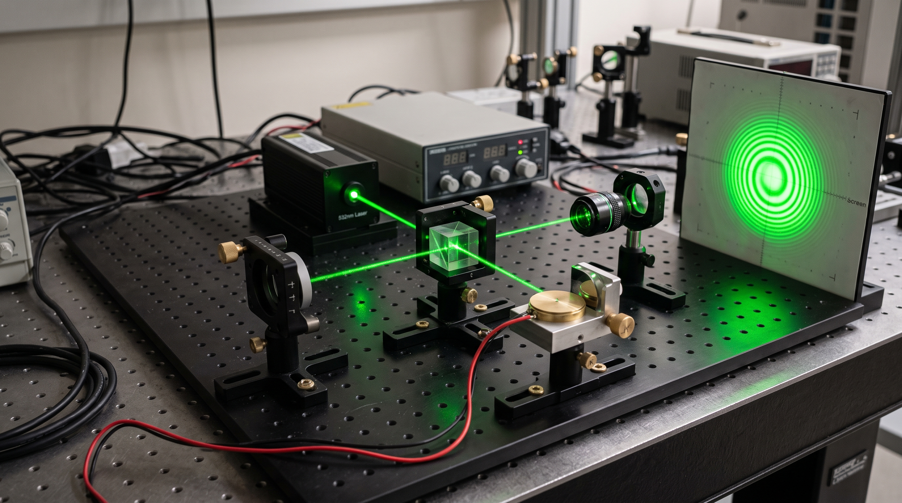
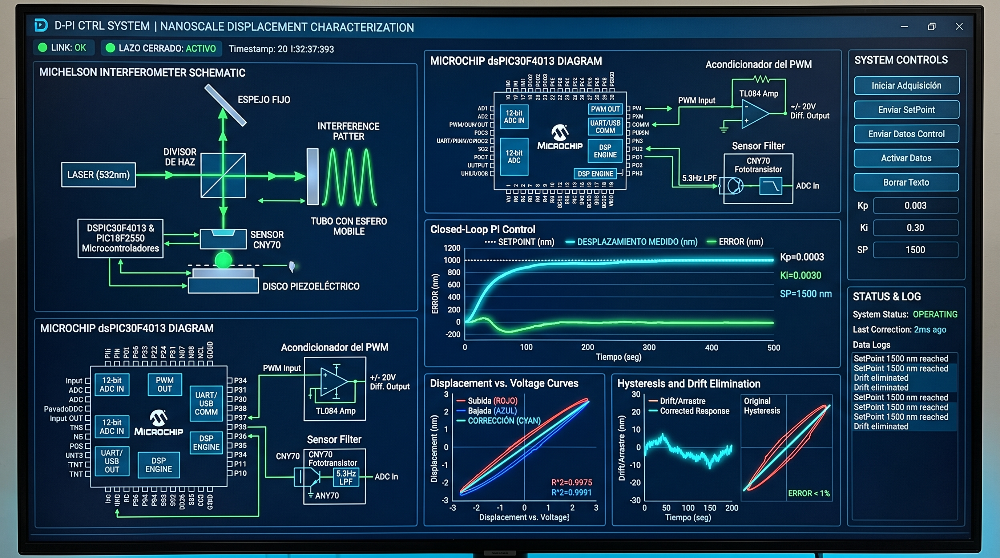

High-precision nanoscale positioning is a foundational requirement in modern nanotechnology instrumentation, particularly Atomic Force Microscopy (AFM), scanning probe systems, and semiconductor metrology. However, commercial piezo-actuators and industrial displacement laser sensors (e.g., Keyence systems exceeding USD $4,500) are cost-prohibitive for resource-constrained university laboratories.
Furthermore, piezoelectric ceramics exhibit severe intrinsic non-linearities—chiefly mechanical hysteresis and continuous creep/drift—which introduce substantial geometric image artifacts, positional distortion, and trajectory divergence under dynamic operation.
To resolve these challenges, this capstone engineering project engineered an accessible, high-precision optoelectronic platform consisting of a custom-built Michelson Interferometer, analog mixed-signal conditioning, and a dual-microcontroller embedded digital signal controller hierarchy. The platform was cross-calibrated against an Asylum Research MFP-3D-BIO Atomic Force Microscope at Universidad de los Andes, verifying an ultra-low metrological optical error of 0.282%.
Piezoelectric transducers elongate under electric field excitation according to the direct piezoelectric constitutive relation $\Delta l = d \cdot V$. While offering theoretically infinite resolution, uncompensated open-loop actuators suffer from three debilitating limitations:
Actuator displacement depends on both current voltage and polarization history, resulting in divergent trajectories between voltage ascent and descent.
Time-dependent and thermal relaxation causes the crystal matrix to drift continuously under static or repeated excitations.
Industrial metrology hardware and laser vibrometers are cost-prohibitive for developing laboratories.
The video below provides a complete experimental demonstration of the custom Michelson Interferometer setup, green laser fringe shifts under piezoelectric diaphragm excitation, analog signal conditioning, and real-time closed-loop position tracking using the custom Java GUI software:
The system synthesizes optical instrumentation, precision low-noise analog filtering, embedded real-time signal processing, and high-voltage actuation into four tightly coupled engineering domains:

The closed-loop tracking error is computed at a strictly deterministic sampling rate inside the dsPIC30F4013 execution loop:
$$e(k) = r(k) - y(k)$$The control action incorporates a proportional correction and an accumulated integral sum:
$$u(k) = K_p \cdot e(k) + K_i \sum_{j=0}^{k} e(j)$$To independently verify optical displacement veracity, the custom interferometric stage was coupled directly to an industrial Asylum Research MFP-3D-BIO Atomic Force Microscope at the Microscopy Laboratory of Universidad de los Andes (Bogotá, Colombia).
This cross-validation proved that the custom low-cost optomechanical setup delivered measurement fidelity rivaling commercial nanometrology equipment.
The table below summarizes the experimental performance comparing open-loop voltage actuation (subject to uncompensated hysteresis and creep) against closed-loop digital PI control stabilized by the Michelson interferometer:
| Operational Metric | Open-Loop (Ascending) | Open-Loop (Descending) | Closed-Loop PI Control |
|---|---|---|---|
| Average Relative Tracking Error | 11.22% | 6.78% | 0.1299% |
| Linear Correlation ($R^2$) | 0.9975 | 0.9991 | 0.99999773 |
| Hysteresis & Drift Effect | Severe path bifurcation | Divergent return curve | Fully Compensated |
| Dynamic Actuator Span | -17 V to +17 V | -17 V to +17 V | ±1950 nm (3.9 μm span) |
| Digital Position Resolution | Unresolvable / Drifted | Unresolvable / Drifted | 1 nm |
| Repeated Ramp Drift (6 cycles) | 34.4 nm / cycle | 48.5 nm / cycle | 0.0 nm (Locked to Setpoint) |